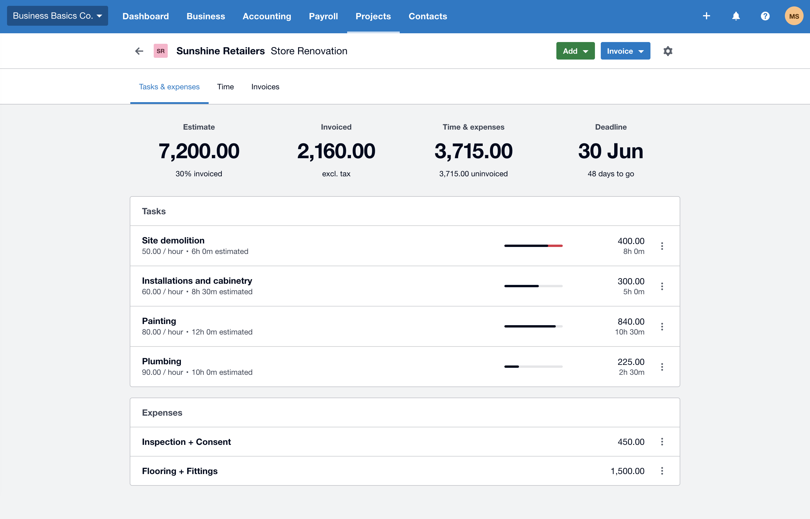

Not a twelve-page pack you won't read. A short report that answers the questions you actually ask: are we making money, where is it going, and which jobs are worth doing again.
Reporting only earns its keep if it changes a decision. Everything here is aimed at that.
Quoted and invoiced are easy numbers. What the job actually cost you — materials, labour hours, the subbie you had to bring in, the day lost to weather — is the number that tells you whether that type of work is worth quoting again.
Most trade businesses have this data spread between the job system, the timesheets and Xero, and never joined up. Joining it up is the single most useful thing reporting can do for a trade business.
Clean, current books — reporting on books that are two months behind tells you about the past, not the present. If your day-to-day is already tidy, we can report straight away. If it isn't, Tradie Daily comes first.
For job costing we need your job system connected and your crew putting hours against jobs. If that isn't happening yet, that's a systems job before it's a reporting job.
Fixed price, monthly or quarterly. The value isn't in the hours it takes to produce, so it isn't charged that way.
Most people start quarterly to get a feel for it, then move to monthly once they realise they're making decisions off it. A one-off deep look — before buying plant, taking on staff, or repricing — can also be scoped on its own.
It isn't your annual accounts or your tax return — that's your accountant's work, and we hand over to them cleanly at year end.
It also isn't advice on how to run your business. You know your trade. Our job is to make sure the numbers you're deciding with are right and that you understand what they're telling you.
Estimate against what's actually been spent, what's been invoiced, and what's still sitting there uninvoiced — per job, not per business.
That's the difference between a gut feel about your best work and knowing which quote to price differently next time.

Xero Projects — a job broken down by task and expense.
One phone call and you'll know whether we can help. No pitch, no obligation.
Book a free chat